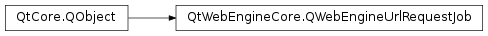

QWebEngineUrlRequestJob¶
Synopsis¶
Functions¶
- def
fail(error) - def
initiator() - def
redirect(url) - def
reply(contentType, device) - def
requestMethod() - def
requestUrl()
Detailed Description¶
The
PySide2.QtWebEngineCore.QWebEngineUrlRequestJobclass represents a custom URL request.A
PySide2.QtWebEngineCore.QWebEngineUrlRequestJobis given toQWebEngineUrlSchemeHandler.requestStarted()and must be handled by the derived implementations of the class. The job can be handled by calling eitherPySide2.QtWebEngineCore.QWebEngineUrlRequestJob.reply(),PySide2.QtWebEngineCore.QWebEngineUrlRequestJob.redirect(), orPySide2.QtWebEngineCore.QWebEngineUrlRequestJob.fail().The class is owned by the web engine and does not need to be deleted. However, the web engine may delete the job when it is no longer needed, and therefore the signal
QObject.destroyed()must be monitored if a pointer to the object is stored.
-
PySide2.QtWebEngineCore.QWebEngineUrlRequestJob.Error¶ This enum type holds the type of the error that occurred:
Constant Description QWebEngineUrlRequestJob.NoError The request was successful. QWebEngineUrlRequestJob.UrlNotFound The requested URL was not found. QWebEngineUrlRequestJob.UrlInvalid The requested URL is invalid. QWebEngineUrlRequestJob.RequestAborted The request was canceled. QWebEngineUrlRequestJob.RequestDenied The request was denied. QWebEngineUrlRequestJob.RequestFailed The request failed.
-
PySide2.QtWebEngineCore.QWebEngineUrlRequestJob.fail(error)¶ Parameters: error – PySide2.QtWebEngineCore.QWebEngineUrlRequestJob.ErrorFails the request with the error
r.See also
QWebEngineUrlRequestJob.Error
-
PySide2.QtWebEngineCore.QWebEngineUrlRequestJob.initiator()¶ Return type: PySide2.QtCore.QUrlReturns the origin URL of the content that initiated the request. If the request was not initiated by web content the function will return an empty
PySide2.QtCore.QUrl.
-
PySide2.QtWebEngineCore.QWebEngineUrlRequestJob.redirect(url)¶ Parameters: url – PySide2.QtCore.QUrlRedirects the request to
url.
-
PySide2.QtWebEngineCore.QWebEngineUrlRequestJob.reply(contentType, device)¶ Parameters: - contentType –
PySide2.QtCore.QByteArray - device –
PySide2.QtCore.QIODevice
Replies to the request with
deviceand the MIME typecontentType.The user has to be aware that
devicewill be used on another thread until the job is deleted. In case simultaneous access from the main thread is desired, the user is reponsible for making access todevicethread-safe for example by usingPySide2.QtCore.QMutex. Note that thedeviceobject is not owned by the web engine. Therefore, the signalQObject.destroyed()ofPySide2.QtWebEngineCore.QWebEngineUrlRequestJobmust be monitored.The device should remain available at least as long as the job exists. When calling this method with a newly constructed device, one solution is to make the device delete itself when closed, like this:
connect(device, &QIODevice::aboutToClose, device, &QObject::deleteLater);
- contentType –
-
PySide2.QtWebEngineCore.QWebEngineUrlRequestJob.requestMethod()¶ Return type: PySide2.QtCore.QByteArrayReturns the HTTP method of the request (for example, GET or POST).
-
PySide2.QtWebEngineCore.QWebEngineUrlRequestJob.requestUrl()¶ Return type: PySide2.QtCore.QUrlReturns the requested URL.
© 2018 The Qt Company Ltd. Documentation contributions included herein are the copyrights of their respective owners. The documentation provided herein is licensed under the terms of the GNU Free Documentation License version 1.3 as published by the Free Software Foundation. Qt and respective logos are trademarks of The Qt Company Ltd. in Finland and/or other countries worldwide. All other trademarks are property of their respective owners.